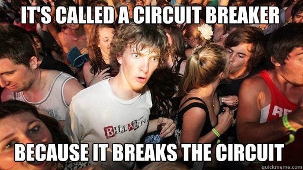
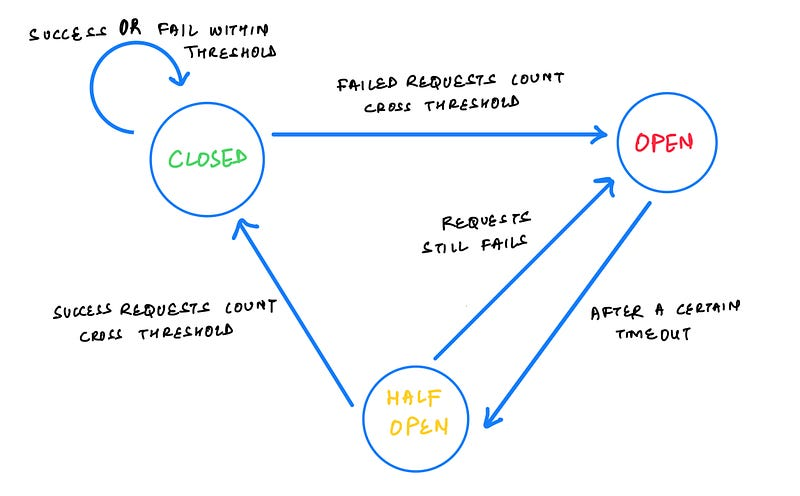
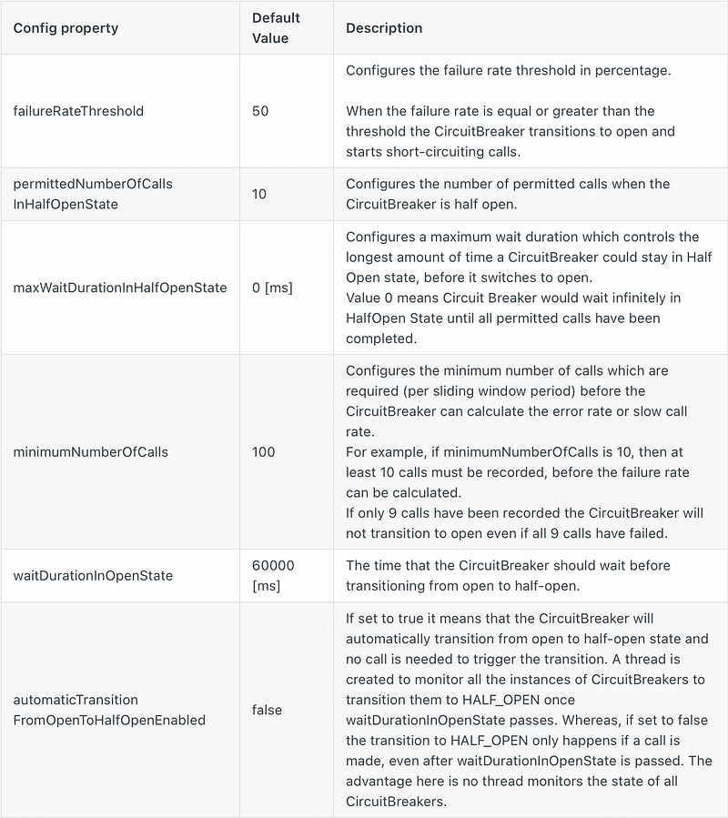

As microservices architecture is all about having collection of multiple micro sized separately deployable services which co-ordinate together to comprise as software system. Splitting the system is into individual services is still the easier part but managing co-ordination is hell of a job.
For a resilient and highly available system, handling failures in these services gracefully without impacting the whole system is a necessity.
What is the problem ?
Assume an orders service handles request from the user placing a new order. The user tries to make the payment and orders service communicates with payment service to check the status before confirming the order. Now payment service goes down due to lack of resources such as cpu or memory. Ideally order services must be running with multiple threads (or async requests) which are trying to invoke the payment service APIs. These payment service APIs takes too long to respond and hence more and more orders get stuck waiting for response and eventually it will lead to failures in order service.
This is classic example of cascading failures where the failure in payment service propagates to order service and assume it as complex system where services co-ordinate with each other, uch failure will propagates to other services as well. Its hard to believe but if such cascading failures are not taken care of , it can result in whole system going down.
Can’t you handle exceptions ?
Before talking about the solution to this cascaded failure, understand that the root cause of the issue the dependency of order service on the payments service. Generally success and failures from other services (here payment service) are handled with a simple try catch or some other exception handler but cases like slow responses and network failures are ignored assuming its low probability which lead to such situation.
It clearly shows that a braking mechanism is required between the caller service (like order service) and the callee service (like payment service). Assuming the whole system like complex circuitry, the braking mechanism (actually a design pattern) which I am going to discuss about is called Circuit Breaker pattern.

What is Circuit Breaker Pattern ?
Circuit breaker pattern is a sustainable design patterns designed to prevent cascading failures in Microservices. In an analogy, this pattern works like a MCB (Miniature Circuit Breaker) in your house. Circuit breakers kick in when a caller service face slow or no responses from the callee service due to failures or network issues.
Circuit Breaker pattern operates in three states: open, closed, and half-open, each serving a specific purpose in managing service or resource failures:

Closed State
Circuit breaker allows normal requests to pass through. It monitors the responses from the service or resource for errors or failures. If the error rate remains below a predefined threshold limit, the circuit breaker remains in the closed state, allowing all requests to go through without interruption. This state ensures that the application functions as usual under normal conditions.
Open State
When the circuit breaker detects that the error rate has exceeded the predefined threshold, it transitions to the open state. In this state, the circuit breaker blocks any further requests from being sent to the failing service or resource. This prevents overloading the resource and allows it time to recover. During the open state, the circuit breaker can be configured to perform actions like returning predefined error responses or directing traffic to a backup service.
Half-Open State
After a certain period or when specific conditions are met, the circuit breaker transitions from the open state to the half-open state. In this state, the circuit breaker allows a limited number of test requests to pass through to the service or resource to check if it has recovered. If these test requests are successful and indicate that the resource is now stable, the circuit breaker transitions back to the closed state, resuming normal operations. However, if the test requests continue to fail, the circuit breaker remains in the open state, preventing further requests until the resource is fully recovered.
These states provide a dynamic and adaptive mechanism for managing the availability and resilience of services or resources in cloud-based systems, ensuring that they can gracefully handle failures while maintaining overall system reliability.
Terminology & Implementation
Circuit breakers can be implemented using famous libraries like Hystrix by Netflix or Resilence4j. And my personal favourite is Resilence4j.
Following are terminologies used by these libraries while configuring circuit breakers
- Circuit breaker is enabled : status if circuit breaker is enabled or not.
- Minimum number of calls : min number of call before calculating the failure threshold of circuit breaker.
- Failure threshold limit : threshold limit in percentage or count after which circuit should move to open state.
- Wait time in open state : time for which circuit should wait before moving from open to half open state.
- Auto transition from open to half open state : whether circuit should move from open to half open state automatically or need a call to trigger it.
Following are some configuration details in Hystrix and Resilence4j which you can see for understanding

I will not stretch the article by showing you redundant implementation code of these libraries which you can find in thousands of articles and library documentation. But after reading this article you will be good to go while implementing such libraries in your code base.
Tip : Circuit breaker states can also be monitored if required either by using simple logging or by creating some sort of grafana charts to show metrics like failure count, success to failure ratio etc. These circuit breaker metrics of caller service can be compared with callee service health probe metrics to figure out the root cause of failure whenever required.
Limitations of this pattern
- Circuits are difficult to do as a one-off. They require an infrastructure management technology such as a service mesh that can manage the switching on and off.
- Testing with circuit breaker in action is difficult as state changes are difficult to track.
Conclusion
Circuit breakers should be used in services that are heavily dependent on the responses from other services. Eliminating the failures completely is not possible in case of microservices but minimising failures to 99% and handling the 1% gracefully should be the goal.
“ Microservices are double edged swords, if you do not place necessary protections in the right place, a small spark in the system can lead to a complete breakdown. Circuit breakers are one such protection mechanism to avoid cascaded failures“
Don’t forget to follow me on Medium for more such content and give a clap if you like it.